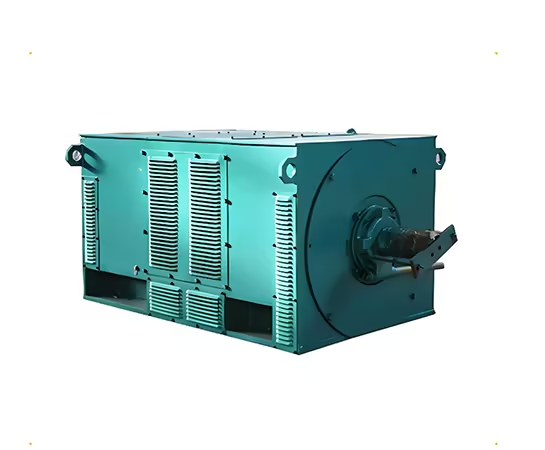

一、产品概述与技术特点
1. 产品简介
TYC系列高效高压永磁同步电动机是西玛电机针对现代工业对能耗与可靠性双重需求而研发的新型高压电动机。该系列电机采用永磁直驱技术，与传统异步电机相比，具有明显的技术优势。
作为传统"异步电机+减速机"驱动模式的革命性替代产品，TYC系列直接驱动负载，去掉了减速机，无任何中间传动环节，提高了系统的可靠性，缩短了传动链，提高了效率，降低了故障率。
2. 核心技术特点
TYC系列高效高压永磁同步电动机融合了多项创新技术，具有显著的性能优势：
卓越的高效节能特性：电机效率高，功率因数高，较好地提高了电网的品质因素，充分发挥了现有电网的容量，节省了电网的投资
优异的运行性能：具有传动效率高、起动转矩性能好、节能、噪音低、振动小、温升低、运行安全可靠、安装维护费用低等优点
宽电压适应能力：根据用户需要，可以提供多电压等级的产品
二、技术参数与性能指标
TYC系列高效高压永磁同步电动机覆盖了广泛的技术规格，满足不同工业场景的动力需求：
主要技术参数
| 参数类别 | 技术规格与性能指标 |
|---|---|
| 防护等级 | IP23（标准型），IP54、IP55（可选） |
| 绝缘等级 | F级 |
| 工作方式 | S1（连续工作制） |
| 机座范围 | H250～H355（可扩展至H132~H280） |
| 功率范围 | 5.5kW～55kW（可扩展） |
| 极数范围 | 4~120极 |
| 频率范围 | 0~88Hz |
性能特征说明
TYC系列电动机在电磁设计、结构强度和散热性能等方面均进行了全面优化：
宽经济运行范围：在25%～120%额定负载范围内均可保持较高的效率和功率因数
高功率因数：无需电励磁，功率因数可接近1
同步转速稳定：负载转矩变化不影响转速，转速恒定为同步转速
三、结构设计与配置
1. 电机主体结构
TYC系列高效高压永磁同步电动机采用创新设计理念，每个部件都经过精心设计和优化：
永磁转子设计：气隙磁场由安装在转子上的稀土永磁材料提供，永磁材料的磁性能优异，可以提高功率密度
直接驱动结构：永磁同步电机直接驱动皮带滚筒，无任何中间传动环节，提高了系统的可靠性
紧凑型设计：可以选择更为紧凑的机座号，功率密度大
2. 扩展功能配置
TYC系列电动机提供丰富的扩展功能选项，满足用户的特殊需求：
多种防护等级：提供IP23、IP54、IP55、IP56、IP67等多种防护等级，适应不同工作环境
变频驱动兼容：配合变频器供电，具有启动力矩大，调速范围宽的特点
高效冷却系统：采用先进的冷却技术，确保电机在各种负载条件下保持适宜温度
四、应用领域与场景
TYC系列高效高压永磁同步电动机凭借其可靠的性能和高效节能的特点，在众多工业领域得到广泛应用：
1. 重工业领域
电力能源行业：应用于发电厂辅机设备，提供稳定的动力支持
水泥建材行业：用于驱动磨机、风机等设备，耐受恶劣工况
矿山冶金行业：专门用于破碎机、提升机、刮板机等重型设备
2. 通用工业领域
化工行业：适用于化工流程泵、压缩机等设备
港口码头：用于输送设备、起重机械等
洗选行业：应用于选矿设备、分选机械等
3. 特殊应用场景
TYC系列电动机还可根据特殊环境需求提供定制化解决方案：
风机水泵设备：特别适用于驱动风机、水泵等设备
密炼机设备：用于橡胶塑料行业的密炼设备
船用推进系统：可作为船用推进电机使用
五、产品优势与价值
1. 高效节能效益
TYC系列高效高压永磁同步电动机具有显著的经济效益：
降低运行成本：高效率设计可显著减少能耗，综合节电率达10-30%，缩短投资回收期
优化功率因数：永磁同步电机具有高功率因数，减少无功补偿设备投资，提高电网质量
全生命周期成本低：虽然初始投资略高，但运行期间的节能效益使全生命周期成本大幅降低
2. 运行可靠性
TYC系列电动机在可靠性方面具有明显优势：
坚固的结构设计：采用优化的机械结构，能承受各种工况下的机械应力和热应力
简化传动系统：去掉了减速机，永磁同步电机直接驱动负载，缩短了传动链，提高了系统的可靠性，降低了故障率
严格的品质控制：从原材料到成品全程质量监控，确保每台电机符合JB/T 12682-2016标准要求
3. 维护便利性
该系列电机在设计上充分考虑了维护的便利性：
减少维护环节：直接驱动设计省去了减速机维护的环节和费用
模块化设计：关键部件采用模块化设计，降低维护难度和备件库存
长寿命设计：采用F级绝缘系统，设计寿命长，维护周期长
六、安装与使用指南
1. 安装环境要求
TYC系列高效高压永磁同步电动机对安装环境有明确要求：
环境条件：适用于常规工业环境
适用场所：广泛应用于电力、水泥、矿山、冶金、洗选、化工、码头等各行业
特殊环境适应：对于特殊环境条件，可提供定制化设计以满足需求
2. 安装与调试
正确的安装与调试是保证电机正常运行的关键：
基础要求：需要坚固平整的基础，能够承受电机的重量和运行时的机械应力
对中要求：电动机和被驱动机械采用直驱连接时，必须保证精确对中，避免附加力
电气连接：按照电机铭牌和接线图进行正确接线，确保接地可靠
七、服务与技术支持
1. 质量保证体系
西玛电机建立了完善的质量保证体系，确保TYC系列高效高压永磁同步电动机的卓越品质：
标准符合性：产品严格遵循JB/T 12682-2016行业标准
严格的检测流程：在制造过程中经过多项严格的测试，确保产品性能符合标准要求
认证资质：TYC系列定制化永磁同步电机已进入国家工信部 "能效之星"节能装备产品目录
2. 售后服务承诺
西玛电机为客户提供全面的售后服务保障：
快速响应：接到售后服务需求后，最迟48小时内派员到达客户现场
专业支持：为客户提供专业技术咨询
持续服务：为客户提供长期的技术支持和服务保障